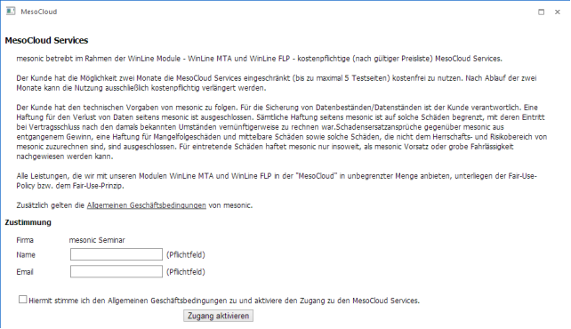
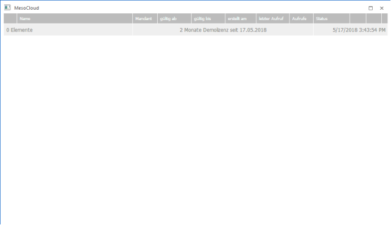
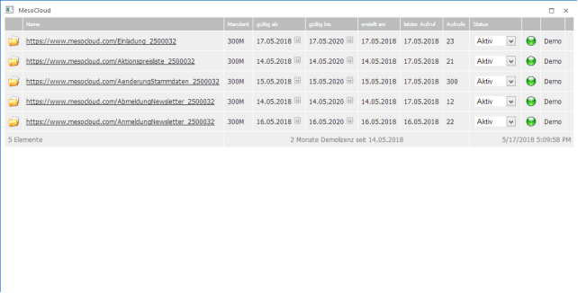
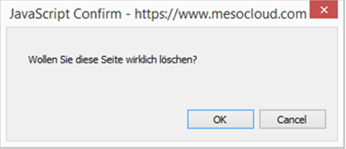
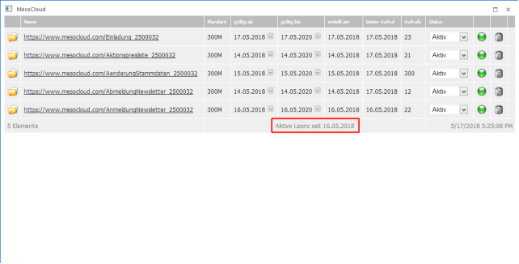

Im WinLine START im Menüpunkt
1 Vorlagen
1 MesoCloud
findet die Verwaltung der MesoCloud statt.
Beim ersten Aufruf wird die Anmeldemaske angezeigt:

Bitte lesen Sie die Bestimmung inkl. der AGB's vollständig durch, erst dann sind die Felder auszufüllen und zu bestätigen:
Ø Firma
Hier wird der Firmenname gemäß der eingespielten Lizenz vorgeschlagen. Unter diesem Lizenznamen werden in weiterer Folge auch alle Aktionen abgespeichert. Wenn hier nicht Ihr Firmenname angezeigt wird, wenden Sie sich bitte an mesonic.
Ø Name
In diesem Feld wir der Name des Zuständigen eingetragen.
Ø E-Mail
Eingabe der E-Mail-Adresse des Zuständigen. Diese Eingaben dienen nur zur Information.
Durch Aktivieren der Checkbox
Ø Hiermit stimme ich den Allgemeinen Geschäftsbedingungen zu und aktiviere den Zugang zu den MesoCloud Services.
und Anklicken des Buttons
Ø Zugang aktivieren
wird der Zugang zu den MesoCloud Services freigeschaltet. Im ersten Schritt erfolgt die Freischaltung für den Zeitraum von zwei Monaten, der sich entsprechend erweitert, sofern eines der Produkte
ü MTA - Tracking & Analyse von E-Mail-Kampagnen in der WinLine inkl. MesoCloud Services
ü FLP - Functional Landingpages inkl. WinLine MTA und MesoCloud Services
erworben wird. Ist das nicht der Fall, so können nach Ablauf der zwei Monate bzw. nach dem Speichern von fünf HTML-Seiten bzw. nach Durchführung von fünf E-Mail-Trackings die entsprechenden Funktionen nicht mehr verwendet werden.
Wurde der Zugang aktiviert und der Menüpunkt MesoCloud wird nochmals aufgerufen, dann wird folgendes Fenster angezeigt:

Darin ist ersichtlich, dass es sich um eine Demo-Lizenz handelt und ab wann sie gültig ist.
Wenn bereits HTML-Seiten auf die MesoCloud geladen wurden, dann sind in dem Fenster mehr Informationen ersichtlich:

Ø Name
Hier wird der Name und der Speicherort der HTML-Seite angezeigt. Im Namen enthalten ist auch die Lizenznummer.
Ø Mandant
Hier wird der Mandant angezeigt, für den die HTML-Seite angelegt wurde.
Ø gültig ab - gültig bis
Hier wird der Gültigkeitszeitraum angezeigt, der beim Speichern der HTML-Seite angegeben werden kann. Hier kann dieser Gültigkeitszeitraum bei Bedarf noch überarbeitet werden. Wenn eine Änderung gemacht wird, wird diese sofort gespeichert.
Ø erstellt am
Datum, wann die HTML-Seite erstellt wurde.
Ø letzter Aufruf
Datum, wann die HTML-Seite zuletzt verwendet wurde. Wenn die Seite noch nicht verwendet wurde, dann wird hier das Erstellungsdatum angezeigt.
Ø Aufrufe
In diesem Feld wird angezeigt, wie oft die HTML-Seite bereits angesprochen (z.B. durch Anklicken eines Links in einer E-Mail) wurde.
Ø Status
Über die Auswahllistbox kann gesteuert werden, ob die Seite "Aktiv" ist, oder ob sie "Gesperrt" ist. Abhängig davon wird in der nächsten Spalte entweder ein grünes oder ein rotes Symbol angezeigt. Wenn eine Änderung gemacht wird, wird diese sofort gespeichert.
Ø Demo / Löschen
Solange noch keine Lizenz vorhanden ist, wird hier das Wort "Demo" angezeigt. Sobald eine Lizenz vorhanden ist, wird das Word "Demo" durch ein "Löschen"-Symbol ersetzt. Damit können dann bestehende Seiten von der MesoCloud wieder gelöscht werden, wobei die Seite erst nach Bestätigung der Meldung

tatsächlich von der MesoCloud gelöscht wird.
Hinweis:
Wenn eine Seite von der MesoCloud gelöscht wird, kann sie trotzdem noch im HTML-Editor aufgerufen und bearbeitet werden.
Sobald eine Lizenz vorhanden ist, wird im Fenster auch anzeigt, ab wann die Lizenz aktiv ist.

Ab diesem Zeitpunkt können dann auch mehr als fünf HTML-Seiten in der MesoCloud gespeichert werden.
Buttons
Ø ENDE-Button
Durch Drücken der ESC-Taste kann das Fenster geschlossen werden.